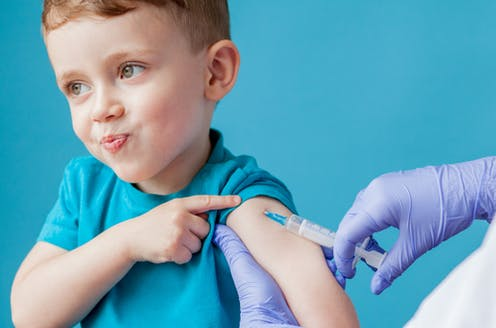

Children may need to be vaccinated against Covid-19 so that the UK population can reach herd immunity
by William Kahler
Professor Jeffrey Almond told Sky News that jabs for young people could be needed to reach the benchmark for herd immunity.
"At the start of this we reckoned that you needed somewhere around 65 per cent to 70 per cent of the whole population to be immune in order to have that herd immunity which prevents the virus spreading," he said.
"Because, with 80 per cent of the adult population (vaccinated), if that only represents 50 per cent of the whole population, we're still too low to prevent the virus spreading and it will spread in kids.
"So, I'm in favour, if we can and when we can, of vaccinating children as well so that the whole population is immune to the point where the virus can no longer circulate."
Boris Johnson has suggested people who've had two vaccine doses will be able to travel abroad without the need for quarantine upon arrival home.
The PM said a plan will be set out in the "next few days". It's expected the rules will apply to amber list countries.
Speaking to reporters on during a visit to a Nissan plant in Sunderland, Mr Johnson said: "I am very confident that the double jabs will be a liberator and they will enable people to travel.
"We'll be setting out a lot more about the detail of that in the course of July and in the course of the next few days - about how we see it working."
He added: "But there is no doubt at all that once you have got the two jabs you are in a much better position."